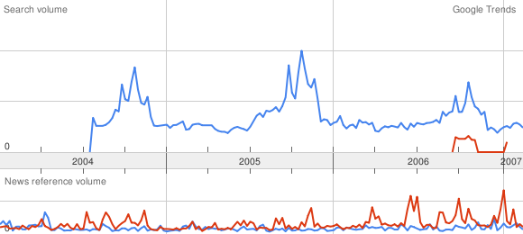
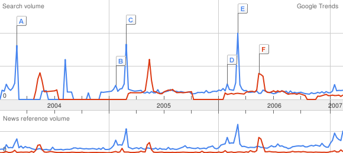
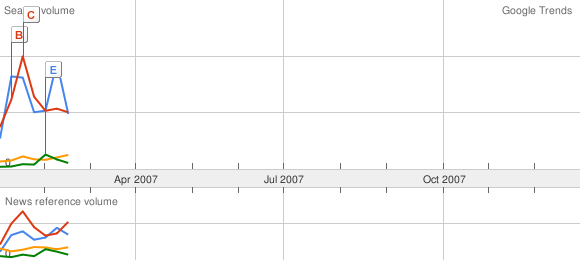
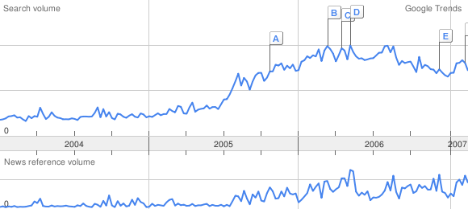

Für die medizinische Forschung nutzen wir Deep Learning zum Scoring von Röntgenbildern.
Nach der Erweiterung von "Google Trends" zu "Google Hot Trends", lohnt es sich wieder einmal etwas mit Google Trends zu spielen. Das Tool liefert eine spannende Aufbereitung der Verteilung bestimmter Suchabfragen über einen Zeitraum von zweieinhalb Jahren. Auch der direkte Vergleich zweier unterschiedlicher Begriffe ist damit möglich.
Let's go (die Interpretation bleibt dabei natürlich nach wie vor dem user überlassen...):
krankenkasse (blau), krankenversicherung (rot) link

Auch nach dem Namenswechsel von Krankenkasse zu Krankenversicherung, suchen Schweizerinnen und Schweizer nach wie vor nach dem Begriff "Krankenkasse". Auch in der Grafik ersichtlich sind die jeweiligen Ausschläge Ende Jahr, wenn viele Versicherte im Begriff sind ihre Krankenkasse (pardon Krankenversicherung) zu wechseln.
oscar (blau), cannes (rot) link

Mega-Events wie die Oscarverleihungen oder im Vergleich dazu das Filmfestival von Cannes führen zu einem markanten Anstieg der Suchanfragen.
obama (blau), clinton (rot), mccain (gelb), giuliani (grün) link

"Googlein, Googlein an der Wand, wer wird Präsident im US-Land?" Die Ergebnisse sind bei dieser Auswertung auf die USA eingeschränkt. Allerdings bleibt den zurückliegenden Kandidaten ja noch etwas Zeit.
e-mail (blau), spam (rot) link

Etablierte Internet-Technologien wie e-mail scheinen im Suchvolumen eher rückläufig zu sein; auch der lästige spam hat - zumindest bei den Suchanfragen - einen negativen Trend.
ajax (blau) link

Will man dem letzten Internet Hype "AJAX" nachspüren, so zeigt sich eine eindeutige Schwäche des Tools. Es wird nämlich nicht unterschieden, ob sich der Begriff auf den Fussballverein aus Amsterdam oder auf das Akronym "Asynchronous JavaScript and XML" bezieht (eigentlich könnte ja auch noch der griechische Held namens Ajax gemeint sein...).